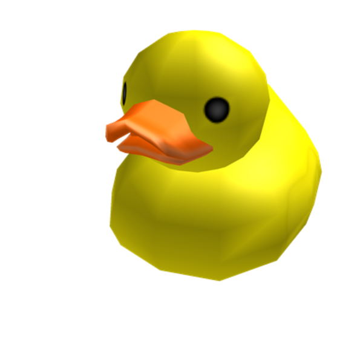

back?

Use-me para obter alguma dica!
(Dicas Restantes:3)
Em 22 de abril de 1500, a esquadra de Pedro Álvares Cabral chegou ao território que mais tarde seria chamado de Brasil. Qual foi o nome dado ao território encontrado?
Ilha de Vera Cruz
Terra do fogo
Nova Lisboa
Ilha de Cabral